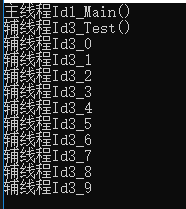

原文连接:https://www.cnblogs.com/xiaomowang/p/11448414.html
最近自己写了个小爬虫，里面用到了多线程技术，忽然发现对此技术竟然有些陌生了，于是乎开始疯狂的去问度娘，在此记录下来，以便自己和各位小伙伴们学习。
一、什么是线程
一个应用程序就相当于一个进程，进程拥有应用程序的所有资源进程包括线程，进程的资源被线程共享，但不拥有线程。我们可以打开电脑中的任务管理器，运行的.exe都是一个进程，里面的分支是线程。
二、多线程
多线程其实就是进程中一段并行运行的代码
1. 创建并启动线程
1 static void Main()
2 {
3 //获取线程Id
4 var threadId = Thread.CurrentThread.ManagedThreadId;
5 var thread = new Thread(Test1);
6 thread.Start();
7
8 Console.WriteLine(threadId + "_Main()");
9 Console.Read();
10 }
11
12 /// <summary>
13 /// 测试方法
14 /// </summary>
15 private static void Test1()
16 {
17 //获取线程Id
18 var threadId = Thread.CurrentThread.ManagedThreadId;
19 Console.WriteLine(threadId + "_Test()");
20 for (int i = 0; i < 10; i++)
21 {
22 Console.WriteLine(threadId + "_" + i);
23 }
24 }结果：

2、暂定线程诺干时间
1 static void Main()
2 {
3 //获取线程Id
4 var threadId = Thread.CurrentThread.ManagedThreadId;
5 var thread = new Thread(Test1);
6 thread.Start();
7 Console.WriteLine($"主线程Id{threadId}_Main()");
8 Console.Read();
9 }
10
11 /// <summary>
12 /// 测试方法
13 /// </summary>
14 private static void Test1()
15 {
16 //获取线程Id
17 var threadId = Thread.CurrentThread.ManagedThreadId;
18 Console.WriteLine($"辅线程Id{threadId}_Test()");
19 for (int i = 0; i < 10; i++)
20 {
21 Thread.Sleep(1000);//单位毫秒
22 Console.WriteLine($"辅线程Id{threadId}_{DateTime.Now}");
23 }
24 }结果：
3、线程合并
Thread.Join操作会阻塞当前线程，等待子线程完成后再进行运行。
1 static void Main()
2 {
3 //获取线程Id
4 var threadId = Thread.CurrentThread.ManagedThreadId;
5 var thread = new Thread(Test1);
6 thread.Start();
7 Console.WriteLine($"主线程Id{threadId}_Main()1");
8 thread.Join();
9 Console.WriteLine($"主线程Id{threadId}_Main()2");
10 Console.Read();
11 }
12
13 /// <summary>
14 /// 测试方法
15 /// </summary>
16 private static void Test1()
17 {
18 //获取线程Id
19 var threadId = Thread.CurrentThread.ManagedThreadId;
20 Console.WriteLine($"辅线程Id{threadId}_Test()");
21 for (int i = 0; i < 10; i++)
22 {
23 Thread.Sleep(1000);//单位毫秒
24 Console.WriteLine($"辅线程Id{threadId}_{DateTime.Now}");
25 }
26 }结果：
4、线程终止
1 static void Main()
2 {
3 //获取线程Id
4 var threadId = Thread.CurrentThread.ManagedThreadId;
5 var thread = new Thread(Test1);
6 thread.Start();
7 Console.WriteLine($"主线程Id{threadId}_Main()1");
8 Thread.Sleep(3000);
9 thread.Abort();
10 Console.WriteLine($"主线程Id{threadId}_Main()2");
11 Console.Read();
12 }
13
14 /// <summary>
15 /// 测试方法
16 /// </summary>
17 private static void Test1()
18 {
19 //获取线程Id
20 var threadId = Thread.CurrentThread.ManagedThreadId;
21 Console.WriteLine($"辅线程Id{threadId}_Test()");
22 for (int i = 0; i < 10; i++)
23 {
24 Thread.Sleep(1000);//单位毫秒
25 Console.WriteLine($"辅线程Id{threadId}_{DateTime.Now}");
26 }
27 }结果：

5、线程中的参数传递
1 static void Main()
2 {
3 //获取线程Id
4 var threadId = Thread.CurrentThread.ManagedThreadId;
5 Console.WriteLine($"主线程Id{threadId}_Main()");
6 //第一种参数传递方式
7 var thread1 = new Thread(() => Test1("小魔王"));
8 thread1.Start();
9
10 //第二种参数传递方式(参数只能是一个，object类型)
11 var parameterizedThreadStart = new ParameterizedThreadStart(Test2);
12 var thread2 = new Thread(parameterizedThreadStart);
13 thread2.Start("大魔王");
14 Console.Read();
15 }
16
17 /// <summary>
18 /// 测试方法
19 /// </summary>
20 private static void Test1(string name)
21 {
22 //获取线程Id
23 var threadId = Thread.CurrentThread.ManagedThreadId;
24 Console.WriteLine($"辅线程Id{threadId}_我的名字叫：{name}");
25 }
26
27 /// <summary>
28 /// 测试方法
29 /// </summary>
30 private static void Test2(object name)
31 {
32 //获取线程Id
33 var threadId = Thread.CurrentThread.ManagedThreadId;
34 Console.WriteLine($"辅线程Id{threadId}_我的名字叫：{name}");
35 }结果：
还有其他的传递方式，在此先不做说明了，这里只介绍Thread提供的这么几种。
6、线程安全和线程锁Lock
线程安全就是多线程访问时，采用了加锁机制，当一个线程访问该类的某个数据时，进行保护，其他线程不能进行访问直到该线程读取完，其他线程才可使用。线程安全情况下，不会出现数据不一致或者数据污染的问题。 线程不安全就是不提供数据访问保护，有可能出现多个线程先后更改数据造成所得到的数据是脏数据！ 若每个线程中对全局变量、静态变量只有读操作，而无写操作，一般来说，这个全局变量是线程安全的；若有多个线程同时执行写操作，一般都需要考虑线程同步，否则的话就可能影响线程安全。
lock 关键字通过获取指定对象的互斥锁，将语句块标记为临界区，执行语句然后释放该锁。
lock 确保当一个线程位于代码的临界区时，另一个线程不进入临界区。如果其他线程试图进入锁定的代码，则它将一直等待（即被阻止），直到该对象被释放。使用Lock，会导致整个应用程序串行化，降低程序的并发能力，影响性能。
到底什么场景下要使用lock保证线程安全：该串行就串行，该并行就并行。
加锁前：
1 public static int i = 1000000;
2 static void Main()
3 {
4 //获取线程Id
5 var threadId = Thread.CurrentThread.ManagedThreadId;
6 for (int j = 0; j < 2; j++)
7 {
8 var thread = new Thread(Test1);
9 thread.Start();
10 }
11 Console.Read();
12 }
13
14 /// <summary>
15 /// 测试方法
16 /// </summary>
17 private static void Test1()
18 {
19 //获取线程Id
20 var threadId = Thread.CurrentThread.ManagedThreadId;
21
22 Console.WriteLine($"辅线程Id{threadId}_i初始值：{i}");
23 int count = 0;
24 for (int j = 0; j < 1000000; j++)
25 {
26 i--;
27 count++;
28 }
29 Console.WriteLine($"辅线程Id{threadId}_运行次数：{count}");
30 Console.WriteLine($"辅线程Id{threadId}_i结束值：{i}");
31 }结果：
加锁后:
1 public static int i = 1000000;
2 private readonly static object objLock = new object();
3 static void Main()
4 {
5 //获取线程Id
6 var threadId = Thread.CurrentThread.ManagedThreadId;
7 for (int j = 0; j < 2; j++)
8 {
9 var thread = new Thread(Test1);
10 thread.Start();
11 }
12 Console.Read();
13 }
14
15 private static void Test1()
16 {
17 //获取线程Id
18 var threadId = Thread.CurrentThread.ManagedThreadId;
19
20 int count = 0;
21 lock (objLock)
22 {
23 Console.WriteLine($"辅线程Id{threadId}_i初始值：{i}");
24 for (int j = 0; j < 1000000; j++)
25 {
26 i--;
27 count++;
28 }
29 }
30 Console.WriteLine($"辅线程Id{threadId}_运行次数：{count}");
31 Console.WriteLine($"辅线程Id{threadId}_i结束值：{i}");
32 }结果：
好啦，今天关于线程的知识就分箱到这里啦。